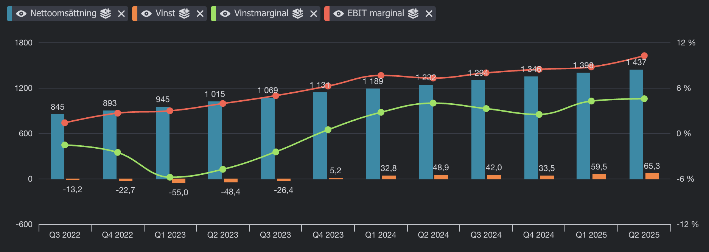
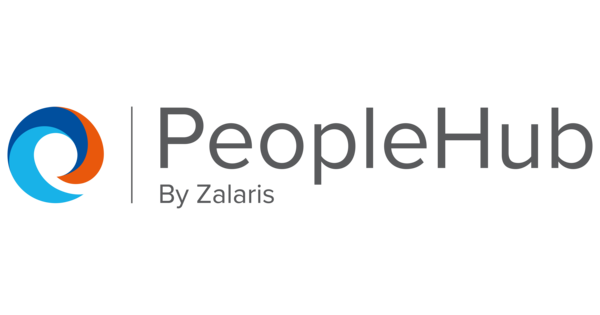
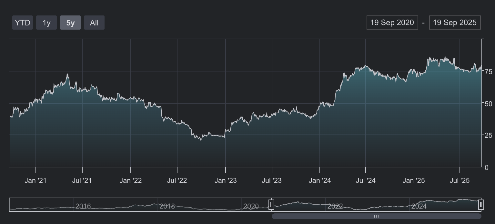
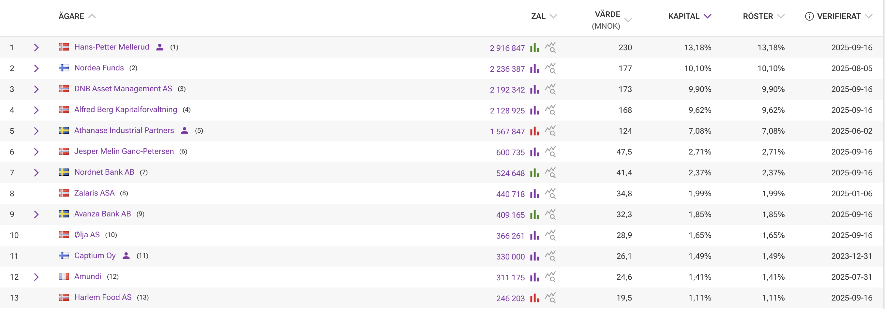
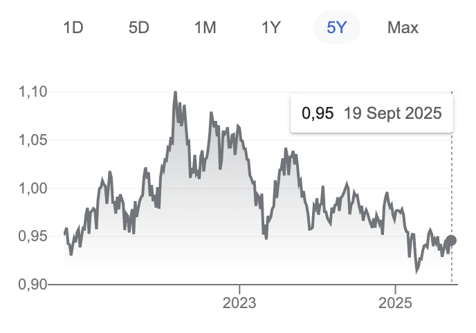
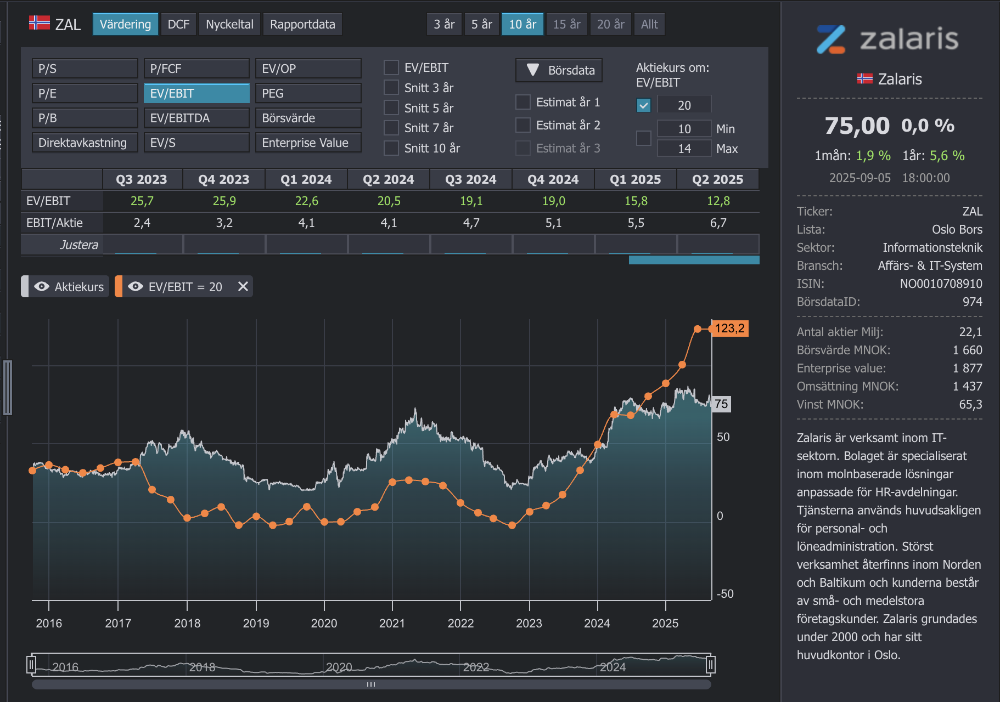
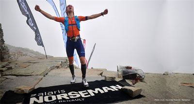

Aktiekurs: 85 NOK
Börsvärde value: 1 749 MNOK
Marknad: Oslo Bors
Ticker: ZAL
Enterprise value: 1 966 MNOK
Antal aktier: 22.1 miljoner aktier
Omsättning: 1 437 MNOK
Vinst: 65 MNOK
VD: Hans-Petter Mellerud
Styrelseordförande:
Tänk på att investeringar alltid innebär ett risktagande. Gör alltid din egen analys innan eventuell handel.

Aktiekurs: 85 NOK
Börsvärde value: 1 749 MNOK
Marknad: Oslo Bors
Ticker: ZAL
Enterprise value: 1 966 MNOK
Antal aktier: 22.1 miljoner aktier
Omsättning: 1 437 MNOK
Vinst: 65 MNOK
VD: Hans-Petter Mellerud
Styrelseordförande:
Zalaris, ett norskt HR-tech bolag för 12x EV/EBIT som växer med 16 procent YoY med 10% marginal. 1,5-3% churn, vd är grundare och största ägare, kunderna är giganter som Nordea/DNB/Danske bank/ABB med fler.
Zalaris grundades år 2000 av Hans-Petter Mellerud och har under en längre tid brottats med lönsamhet från ett par dåliga förvärv. Noterat på norska börsen sedan 2014. För 10 år sedan var bolaget hett inom investeringskretar, precis innan bolaget började göra dåliga förvärv. Förhoppningsvis har bolaget lärt sig något.

Finansiella mål
Omsättning 2 miljarder NOK till helåret 2028 med en EBIT på 13-15 procent. Detta nya mål sattes i Q1 2025.
Tidigare var finansiella målet som sattes september 2023 var att att omsätta 1,5 miljard NOK till 2026E, ledningen kommunicerade i början av 2025 att målet kommer att uppnås under 2025. Zalaris överlevererar.
Zalaris erbjuder en uppsjö av olika HR-tjänster som lönerapportering, benchmarking av löner, talangförvaltning, schemaläggning och annat som man kan förvänta sig av en HR-plattform. Intkäterna kommer in i form av SAAS-intäkter. Deras tjänst integrerar med jättarna på området som SAP, Oracle och Workday.

Kundkoncentrationen är låg med 7 procent på största kunden, och 22% procent på de 5 största kunderna. Över tid bör andelen minska i samband med att man får fler kunder.
Zalaris har haft en tillväxt på runt 15 procent senaste 5 åren, det borde inte vara så svårt att växa med 10 procent kommande kvartal. Rörelsemarginalerna bör konvergera över tid, en SAAS-tjänst som Zalaris erbjuder ska ha högre marginaler.
Hans-Petter Mellerud har en bakgrund som tidigare partner på Accenture och studier i Schweiz. Zalaris trackrecord talar för att han är en gedigen och skicklig ledare av bolaget.
Gunnar Manum är cfo sedan 2020. Han verkar också bra.
Zalaris har haft en stabil kurs på runt 75 nok senaste året. Noterad i Norge.

Vd är största ägare, sedan är Nordea, Alfred Berg och DNB med i listan med runt 10 procent vardera. De får inte äga mer än 10 procent så därför är de precis på gränsen. Det är många institionella förvaltare som är inne.

En förändring är att det inte är Athanase Industrial Partners som lägre är med i toppen för att de sålde precis nästan allt i samband med att deras fond ska läggas ner.
Riskerna för ett bolaget är alltid många med varierade sannolikhet och påverkan. AI kan vara en risk, men det kan också vara en möjlighet för Zalaris att cementera sin plats på marknaden när de inte behöver lika många personer som gör samma tjänster vilket innebär högre marginaler vilket är bra för aktieägarna. AI öppnar även för fler och mer sofistikerade cyberattacker, det kan leda till mer kostnader för Zalaris.
I slutet av 2024 hade Zalaris 1 745 200 personaloptioner med ett genomsnittligt lösenpris på 37,59 NOK. Med dagens aktiekurs på 77 NOK är optionerna från 2022 och 2023 års program totalt värda cirka 70 miljoner NOK. Detta återspeglar en betydande uppgång i aktiekursen från cirka 35 NOK för tre år sedan. Värdet på enbart 2022 års program var 31,9 miljoner NOK, medan 2023 års programoptioner är värda 34,5 miljoner NOK.
Företagets incitament inkluderar även Restricted Stock Units (RSUs). I slutet av 2024 fanns det 183 361 RSUs. Grovt räknat tilldelas cirka 50 000 RSUs årligen, vilket till nuvarande aktiekurs motsvarar cirka 4 miljoner NOK per år. Till skillnad från optionerna avräknas dessa i aktier som är låsta i tre år.
För 2025 har Zalaris infört ett nytt optionsprogram med ett lösenpris på 90,8 NOK. Om aktiekursen stiger till 130 NOK om tre år, skulle detta program vara värt cirka 27,4 miljoner NOK.
En potentiell risk är en lucka i incitamentstäckningen under 2027. Eftersom inga optioner tilldelades under 2024, kommer det att finnas färre incitament för att driva upp aktiekursen just det året.
Företagets Q2 2025-resultat visar 6 miljoner NOK i aktiebaserade betalningar för första halvåret, en minskning från 17 miljoner NOK under samma period 2024. Detta tyder på att de betydande kostnaderna från optionsprogrammen från 2022 och 2023 ännu inte har redovisats fullt ut och förväntas ha en större påverkan under Q3 och Q4 2025.
Över tid spelar valutaeffekter liten roll, då det brukar jämna ut sig, men på kort sikt kan det blir rörigt om NOK blir väldigt mycket starkare då resultatet kommer att se svagare ut än vad det faktiskt är justerat för valutan. Men en starkare NOK innebär då också att aktierna i SEK värderas högre givet att NOK ökar mer än SEK.

Zalaris har sedan länge varit tätt integrerat i SAP plattform och erbjuder sin tjänst PeopleHub genom SAP. Det är en risk och en möjlighet för bolaget.
Det är en risk jag har själv inte har läst allt om hur denna process fungerar och varför det är en av de bästa lösningarna för löner.

Positivt för värderingen:
Negativt för värderingen:
Går det att förstå varför värderingen inte är högre än vad den är just nu?
Värderingen för Zalaris bör vara runt 15x ev/ebit givet att bolaget växer med 10 procent framåt och levererar en lite högre rörelsemarginal på 13 procent istället för dagens 10 procent.
5.9x ev/ebit är vad värderingsmodellen visar den 20e september 2025 för Q4 2027E, det innebär att en aktie ska värderas upp med 254 procent på 2,5 år till 196 NOK aktien. P/E-talet ska samtidigt gå mot 10.
Detta bygger på att Zalaris gör två saker:
En option i värderingen är att Norska kronan mot SEK blir bättre.
Jag har räknat med att incitamentskostnaderna för nästa år på runt 40 miljoner kommer att fördela sig jämt under året, även fast det inte så ofta verkar bli så.
Var exakt ska tillväxten komma ifrån? Nya marknader? Merförsäljning till befintliga kunder? Nya tjänster? Hur ser marknadstillväxten ut i stort? Vad driver marginalexpansionen från 10% till 13-15%? Är det bara skalfördelar eller finns det andra faktorer?
Hur står sig Zalaris erbjudande (“PeopleHub”) och prissättning mot dem?
Fördjupning i det dåliga förvärvet i Tyskland.

Zalaris sponsrar Norseman, ett av världens tuffaste triathlaton tävlingar